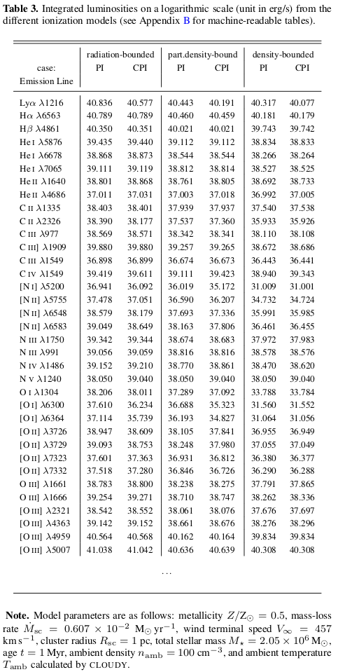

Superwinds and Superbubbles
Download Machine-Readable Tables
The following machine-readable files for the emission-line data are available here (VizieR.tar.gz) and in the CDS VizieR database:
Each file is named as table_case_bound.dat such as table_CPI_radi.dat, where case is for the ionization case (PI: purely photoionization and CPI: photoionization and hydrodynamic collisional ionization), and bound for the optical depth model (radi: fully radiation-bounded, pden: partially density-bounded, and dens: fully density-bounded).
Each file contains the following information:
- metal: metallicity Ẑ ≡ Z/Z⊙ = 1, 0.5, 0.25, and 0.125.
- dMdt: mass-loss rate Ṁsc = 10−1, 10−2, 10−3, and 10−4 × Ẑ0.72 M⊙ yr−1.
- Vinf: wind terminal speed V∞ = 250, 500, and 1000 × Ẑ0.13 km s−1.
- Rsc: cluster radius Rsc = 1 pc.
- age: Cluster current age t = 1 Myr.
- Mstar: Cluster total stellar mass M★ = 2.05 × 106 M⊙.
- logLion: Logarithmic ionizing luminosity log Lion.
- Namb: ambient density namb = 1, 10, 102, and 103 cm−3.
- Tamb: mean ambient temperature Tamb determined by CLOUDY.
- Rmax: maximum radius Rmax (pc) for the surface brightness integration.
- Raper: aperture radius Raper (pc) for the total luminosity integration.
- Rshell: shell radius Rshell (pc).
- Rstr: Strömgren radius Rstr (pc) determined by CLOUDY.
- Rbin: bubble inner radius Rb,in (pc).
- Rbout: bubble outer radius Rb,out (pc) or shell inner radius.
- Tbubble: median temperature Tbubble of the hot bubble.
- Tadi: median temperature Tadi,med of the expanding wind predicted by the adiabatic solutions.
- Twind: median temperature Tw,med of the expanding wind predicted by MAIHEM with the radiative solutions.
- thin: optically thin (1) or thick (0) model.
- mode: the cooling/heating radiative/adiabatic modes:
- 1 (AW: adiabatic wind),
- 2 (AB: adiabatic bubble),
- 3 (AP: adiabatic, pressure-confined),
- 4 (CC: catastrophic cooling),
- 5 (CB: catastrophic cooling bubble), and
- 6 (CP: catastrophic cooling, pressure-confined).
- H_1_1216, H_1_6563, . . . , Ar_5_7006: integrated luminosities of the emission lines Lyα λ1216 Å, Hα λ6563 Å, . . . , [Ar V] λ7006 Å, respectively.

Citation
If you use our photoionization model grids in a scholarly publication, please cite this paper:
@article{Danehkar2021,
author = {{Danehkar}, A. and {Oey}, M. S. and {Gray}, W. J.},
title = {Catastrophic Cooling in Superwinds. II. Exploring the Parameter Space},
journal = {submitted},
volume = {},
number = {},
pages = {},
year = {2021},
doi = {}
}